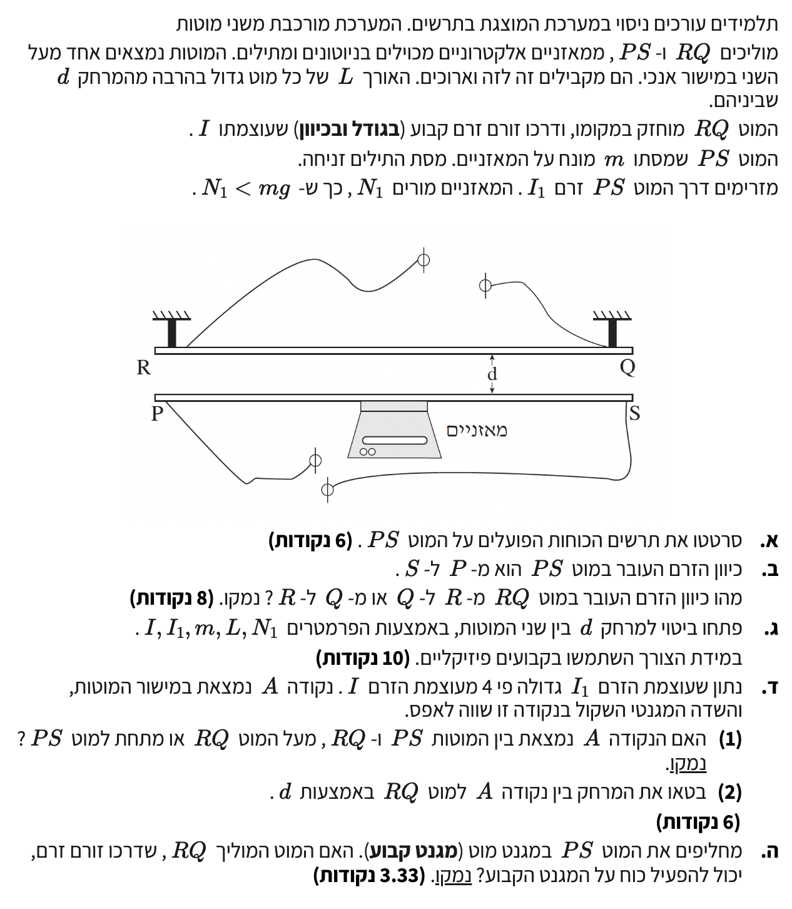

פתרון בגרות בפיזיקה - חשמל 2009
שאלה 4 - כוח מגנטי בין תילים מקבילים
פתרון מלא ומודרך, צעד-אחר-צעד
עודכן:
--- --:--:--

[תמונת השאלה המקורית]
לא נמצאה תמונה בשם question-image.png באותה תיקייה.
מה נתון:
- מוט אופקי \( PS \) שמסתו \( m \) [קילוגרם].
- המאזניים מורים על כוח נורמלי \( N_1 \) [ניוטון] המופעל על המוט כלפי מעלה.
- נתון מפתח: הוריית המאזניים קטנה ממשקל המוט, כלומר \( N_1 < mg \).
- המוט נמצא במנוחה (שיווי משקל).
מה מחפשים:
לסרטט תרשים כוחות (FBD) המייצג את כל הכוחות הפועלים על המוט \( PS \).
נוסחאות ועקרונות בשימוש:
\(\Sigma\vec{F} = 0\) החוק הראשון של ניוטון (שיווי משקל).
\(W = mg\) כוח הכובד.
פתרון צעד-אחר-צעד:
מכיוון שהמוט נמצא במנוחה, שקול הכוחות עליו חייב להיות אפס. אם היה פועל רק כוח הכובד כלפי מטה, המאזניים היו מראים בדיוק את המשקל (\( N = mg \)). אך מכיוון שנתון \( N_1 < mg \), כוח נוסף חייב למשוך את המוט כלפי מעלה כדי לעזור למאזניים לתמוך במוט. כוח זה הוא הכוח המגנטי \( F_B \) שמפעיל המוט \( RQ \) על המוט \( PS \).
מסקנה: על המוט פועלים שלושה כוחות - כוח הכובד \( mg \) (מטה), כוח נורמלי מהמאזניים \( N_1 \) (מעלה), וכוח מגנטי \( F_B \) (מעלה).
טיפ מורה: תמיד התחילו מחוקי ניוטון! ברגע שאמרו לכם "הוריית המאזניים מורה כך וכך" משמעות הדבר היא שנתנו לכם את גודלו של הכוח הנורמלי. הנתון \( N_1 < mg \) הוא רמז עבה לכך שיש כוח נוסף שעוזר להתגבר על כוח המשיכה.
מה נתון:
- כיוון הזרם במוט \( PS \) (התחתון) הוא מ- \( P \) ל- \( S \) (ימינה בתרשים).
- הסקנו מסעיף א' שהכוח המגנטי הפועל על המוט \( PS \) מכוון כלפי מעלה (לעבר המוט \( RQ \)).
מה מחפשים:
את כיוון הזרם במוט העליון \( RQ \).
נוסחאות ועקרונות בשימוש:
כלל יד ימין (השני) לקביעת כיוון כוח מגנטי בין תילים.
עיקרון פיזיקלי: תילים מקבילים שבהם הזרם באותו כיוון מושכים זה את זה. תילים שבהם הזרם בכיוונים מנוגדים דוחים זה את זה.
פתרון צעד-אחר-צעד:
בסעיף הקודם הראינו שהכוח המגנטי על המוט התחתון \( PS \) פועל כלפי מעלה. כלומר, המוט העליון \( RQ \) מפעיל כוח משיכה על המוט התחתון.
כדי ששני תילים נושאי זרם ימשכו זה את זה, הזרמים בהם חייבים לזרום באותו הכיוון. מאחר שהזרם במוט \( PS \) זורם ימינה (מ- \( P \) ל- \( S \)), הזרם במוט \( RQ \) חייב גם הוא לזרום ימינה, כלומר מ- \( R \) ל- \( Q \).
הסבר אלטרנטיבי באמצעות חוקי יד ימין:
כדי שמוט \( PS \) ירגיש כוח כלפי מעלה (אגודל למעלה) כאשר הזרם בו הוא ימינה (אצבעות ימינה), השדה המגנטי באזור שלו חייב להיות מכוון אל תוך הדף \( (\otimes) \). השדה הזה מיוצר על ידי המוט העליון \( RQ \). לפי כלל בורג (או יד ימין לשדה), כדי שתיל ייצר מתחתיו שדה אל תוך הדף, הזרם בו חייב לזרום ימינה (מ- \( R \) ל- \( Q \)).
מסקנה: כיוון הזרם במוט \( RQ \) הוא מ- \( R \) ל- \( Q \).
מה נתון:
- זרם במוט העליון: \( I \) [אמפר].
- זרם במוט התחתון: \( I_1 \) [אמפר].
- אורך המוטות המקבילים: \( L \) [מטר].
- מסת המוט התחתון: \( m \) [קילוגרם].
- הוריית המאזניים: \( N_1 \) [ניוטון].
מה מחפשים:
ביטוי אלגברי למרחק \( d \) בין המוטות באמצעות הנתונים בלבד (וקבועי טבע).
נוסחאות ועקרונות בשימוש:
\(\Sigma F_y = 0\) משוואת שיווי משקל בציר האנכי.
\(\frac{F}{l} = \frac{\mu_0}{2\pi} \frac{I_1 I_2}{d}\) גודל הכוח ליחידת אורך בין שני תילים ארוכים מקבילים.
פתרון צעד-אחר-צעד:
שלב 1: בידוד הכוח המגנטי
מתוך משוואת שיווי המשקל שבנינו בסעיף א', נבודד את הכוח המגנטי הכולל \( F_B \):
\[ N_1 + F_B - mg = 0 \quad \Rightarrow \quad F_B = mg - N_1 \]
שלב 2: שימוש בנוסחת הכוח
נשתמש בנוסחה מהדף לכוח מגנטי בין תילים מקבילים. נציב את הזרמים שלנו (\( I \) ו- \( I_1 \)) ונכפול באורך המוט \( L \) כדי לקבל את הכוח הכולל \( F_B \):
\[ \frac{F_B}{L} = \frac{\mu_0}{2\pi} \frac{I \cdot I_1}{d} \quad \Rightarrow \quad F_B = \frac{\mu_0 I I_1 L}{2\pi d} \]
שלב 3: השוואת ביטויים ובידוד d
נשווה את שני הביטויים עבור \( F_B \) ונבודד את המרחק \( d \):
\[ \frac{\mu_0 I I_1 L}{2\pi d} = mg - N_1 \]
\[ d(mg - N_1) = \frac{\mu_0 I I_1 L}{2\pi} \]
\[ d = \frac{\mu_0 I I_1 L}{2\pi (mg - N_1)} \]
מסקנה: הביטוי למרחק הוא \( d = \frac{\mu_0 I I_1 L}{2\pi (mg - N_1)} \).
טיפ מורה: שימו לב שאם לא היינו משתמשים בנוסחה המוכנה מדף הנוסחאות, היינו צריכים לפתח אותה בעצמנו על ידי חישוב השדה המגנטי שמייצר מוט אחד (\( B = \frac{\mu_0 I}{2\pi d} \)) והצבתו בנוסחת הכוח (\( F = I_1 L B \)). השימוש בנוסחה הישירה חוסך זמן ומונע טעויות!
מה נתון:
- עוצמת הזרם במוט התחתון גדולה פי 4: \( I_1 = 4I \).
- נקודה \( A \) נמצאת במישור המוטות.
- השדה המגנטי השקול בנקודה \( A \) שווה לאפס (\( \vec{B}_{tot} = 0 \)).
מה מחפשים:
- למקם את הנקודה \( A \) במרחב (בין המוטות / מעל / מתחת) עם נימוק.
- לבטא את המרחק של נקודה \( A \) מהמוט \( RQ \) באמצעות \( d \).
נוסחאות ועקרונות בשימוש:
\(B = \frac{\mu_0 I}{2\pi r}\) גודל שדה מגנטי סביב תיל ישר וארוך.
\(\vec{B}_{tot} = \vec{B}_1 + \vec{B}_2 = 0\) עקרון הסופרפוזיציה של שדות מגנטיים (וקטורים).
חלק (1) - מיקום נקודת האיפוס:
כדי שהשדה השקול יהיה אפס, השדות שיוצרים שני המוטות חייבים להיות מנוגדים בכיוונם ושווים בגודלם בנקודה.
הזרמים בשני המוטות זורמים לאותו כיוון (ימינה). נשתמש בכלל יד ימין כדי למצוא את כיוון השדה מכל מוט:
- מעל מוט RQ (העליון): השדה של RQ הוא החוצה (\( \odot \)) והשדה של PS הוא גם החוצה. לא יתכן איפוס.
- מתחת למוט PS (התחתון): השדה של RQ הוא פנימה (\( \otimes \)) והשדה של PS הוא גם פנימה. לא יתכן איפוס.
- בין המוטות: השדה של RQ (העליון) מצביע פנימה (\( \otimes \)), בעוד שהשדה של PS (התחתון) מצביע החוצה (\( \odot \)). הכיוונים מנוגדים, ולכן כאן תיתכן נקודת איפוס!
מסקנה (1): הנקודה \( A \) נמצאת בין שני המוטות.
חלק (2) - חישוב המרחק:
נסמן ב- \( x \) את המרחק של נקודה \( A \) מהמוט העליון \( RQ \). מכאן, המרחק של הנקודה מהמוט התחתון \( PS \) הוא \( d - x \).
נשווה את גודל השדות המגנטיים שמייצר כל מוט בנקודה:
\[ B_{RQ} = B_{PS} \]
\[ \frac{\mu_0 I}{2\pi x} = \frac{\mu_0 (4I)}{2\pi (d - x)} \]
נצמצם משני האגפים את הקבועים המשותפים \( \frac{\mu_0 I}{2\pi} \):
\[ \frac{1}{x} = \frac{4}{d - x} \]
נכפול בהצלבה:
\[ d - x = 4x \quad \Rightarrow \quad d = 5x \quad \Rightarrow \quad x = \frac{d}{5} = 0.2d \]
מסקנה (2): המרחק של נקודה \( A \) מהמוט \( RQ \) הוא \( 0.2d \).
טיפ מורה: תמיד הגיוני שנקודת האיפוס קרובה יותר לתיל החלש יותר! כאן, הזרם ב- \( RQ \) קטן פי 4 מהזרם ב- \( PS \), לכן המרחק מ- \( RQ \) (שהוא \( x \)) צריך להיות קטן פי 4 מהמרחק מ- \( PS \) (שהוא \( d-x \)). ואכן: \( d - 0.2d = 0.8d \), שזה בדיוק פי 4 מ- \( 0.2d \). בדיקת היגיון כזו בבחינה יכולה להציל אתכם מטעות אלגברית קטנה!
מה נתון:
- המוט \( PS \) (התחתון) מוחלף במגנט קבוע.
- המוט \( RQ \) (העליון) נשאר במקומו וממשיך לזרום בו זרם חשמלי קבוע.
מה מחפשים:
לקבוע האם המוט \( RQ \) יכול להפעיל כוח על המגנט הקבוע, ולנמק.
נוסחאות ועקרונות בשימוש:
\(\vec{F}_{1 \rightarrow 2} = -\vec{F}_{2 \rightarrow 1}\) החוק השלישי של ניוטון (חוק הפעולה והתגובה).
עיקרון: זרם חשמלי בשדה מגנטי מרגיש כוח (כוח לורנץ / כוח אמפר).
הסבר פיזיקלי:
המגנט הקבוע מייצר סביבו שדה מגנטי. המוט \( RQ \), שבו זורם זרם חשמלי, נמצא כעת בתוך השדה המגנטי של המגנט. כתוצאה מכך, יפעל על המוט \( RQ \) כוח מגנטי (\( F = I \cdot l \cdot B \)).
על פי החוק השלישי של ניוטון, אם גוף אחד מפעיל כוח על גוף שני, הגוף השני חייב להפעיל על הראשון כוח שווה בגודלו ומנוגד בכיוונו. לכן, מכיוון שהמגנט מפעיל כוח על מוט \( RQ \), מוט \( RQ \) בהכרח מפעיל כוח מגנטי חזרה על המגנט.
מסקנה: כן, המוט המוליך \( RQ \) מפעיל כוח על המגנט הקבוע, בהתאם לחוק השלישי של ניוטון.